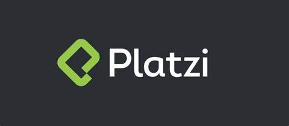
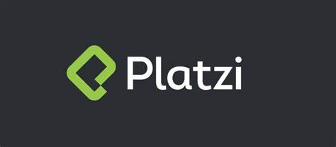

Educación
Nov 2023 - Actualidad
Maestría en Inteligencia Artificial
UNIR México
Abril 2022 - Actualidad
Ciencia de Datos & Inteligencia Artificial
PLATZI
Mar 2005 - Dic 2009
Ingeniería de Petróleo
Universidad Nacional de Ingenieria
Profesional en Ingeniería de petróleo con conocimiento en el campo de la ciencia de datos. Actualmente cursando una Maestría en Inteligencia Artificial. Amplia experiencia en la Industria del Petróleo y en las operaciones de restaurantes. Fuerte experiencia en habilidades cuantitativas, en el campo de la estadística, matemáticas, ciencias de la computación e ingeniería. Apasionado por la tecnología y el aprendizaje constante. Buen nivel hablado y escrito en español e inglés.
Estoy contento de compartir este Proyecto 🚀 de CienciadeDatos, donde hacemos un Análisis de Riesgo Crediticio para una Institución Financiera Alemana. Como científicos de datos, fuimos desafiados con la tarea de construir un modelo de MachineLearning 🤖 que sea preciso y confiable para evaluar la probabilidad de obtener un buen cliente, aquel que demuestra ser un pagador confiable. En este proyecto abarcamos todas las etapas del desarrollo para la construcción de un Modelo de MachineLearning 💻. Desde la Planificación del proyecto, realizando trabajo en equipo, hasta la Optimización del Modelo seleccionado, con la finalidad de mejorar nuestras métricas y obtener un Modelo más robusto.
Este proyecto, lo realicé con la finalidad de poder transcribir cualquier video de Youtube, en un formato de texto. La finalidad de este proyecto es poder colocar las transcripciones en los videos de Youtube.
Apr 2022 - Presente
Mar 2016 - Dic 2021
Oct 2011 - Feb 2016
Feb 2010 - Set 2010
Dic 2010 - Sep 2011
Nov 2023 - Actualidad
Maestría en Inteligencia Artificial
UNIR México
Abril 2022 - Actualidad
Ciencia de Datos & Inteligencia Artificial
PLATZI
Mar 2005 - Dic 2009
Ingeniería de Petróleo
Universidad Nacional de Ingenieria